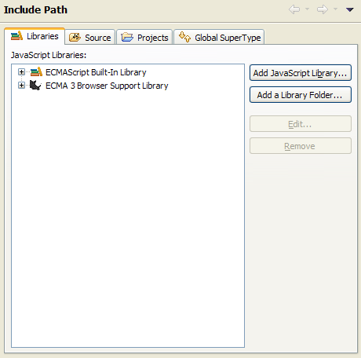
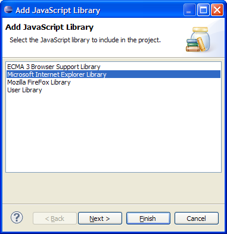
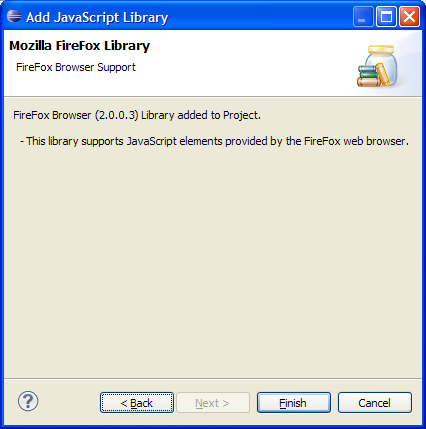
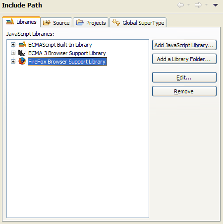

Open the properties dialog for a given JavaScript project and navigate to the JavaScript > Include Path page
 Include Path properties page">
Next, select the Add JavaScript Library... button to start the library wizard.

In the wizard, select the desired type of library to add and select the Next > button. Some libraries may have additional configuration pages, fill them out as needed, and complete the configuration by clicking the Finish button.

Finally, click the OK button to close the JavaScript > Include Path properties page
 Include Path properties page">